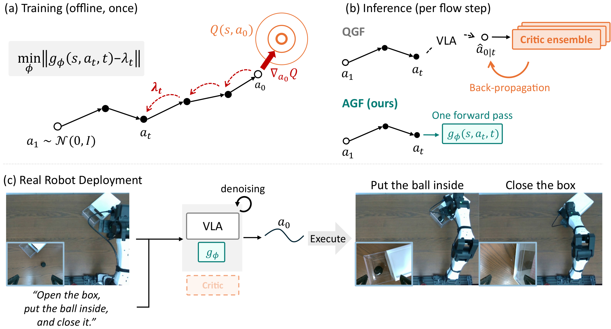
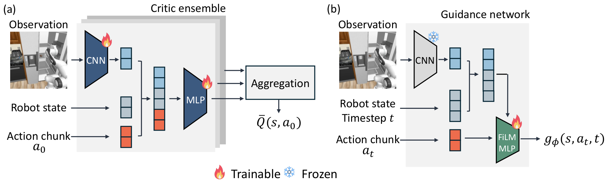
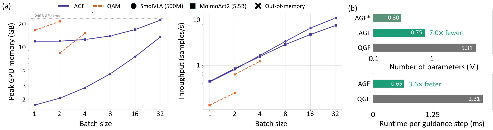
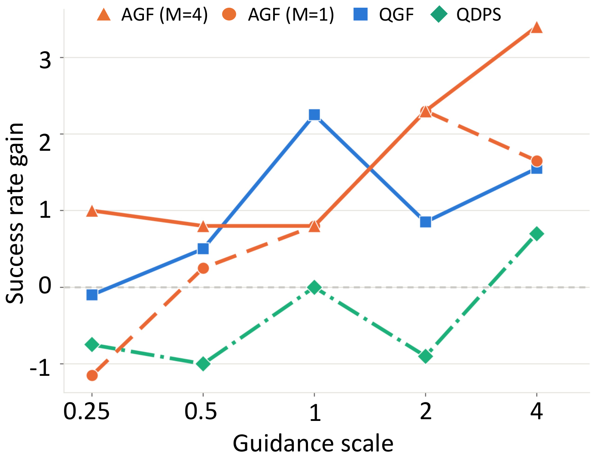

Amortized Critic Guidance for VLA Policies
1KAIST 2SKKU 3GIST *Co-corresponding authors

Flow-based Vision-Language-Action (VLA) policies are typically trained by behavior cloning and thus do not explicitly optimize long-term task return. Critic guidance steers generation toward higher-value actions, but existing methods differentiate the critic through a one-step surrogate of the sampler and back-propagate a critic ensemble at every flow step. In contrast, here we propose Adjoint Guidance Flow (AGF), which amortizes trajectory-aware critic guidance into a lightweight guidance network while preserving the pretrained VLA policy. Specifically, we formulate critic-guided flow generation as a deterministic optimal control problem, whose optimal guidance is a costate that carries the terminal critic gradient back through the remaining flow, and regress the guidance network onto this costate while keeping both the VLA and critic frozen. This design provides favorable memory and throughput scaling during training, and inference needs one guidance-network forward pass per step, without the critic ensemble, back-propagation, or adjoint computation. Across LIBERO, RoboCasa, and LIBERO-Pro, AGF consistently improves pretrained VLAs, remains competitive with critic-guidance and policy-fine-tuning baselines, and is the most robust method when a single guidance strength is deployed across tasks. Compared with QGF, AGF runs 3.6× faster per guidance step with 7.0× fewer parameters, with comparable and even better performance, showing that critic guidance can be trajectory-aware and lightweight.
Add a control \(u_t\) to the frozen flow and maximize the critic value of the executed action:
The optimal control is \(u^\star_t = -\beta_t \lambda_t\), where the costate \(\lambda_t\) carries the terminal critic gradient back through the remaining flow:
A lightweight guidance network \(g_\phi\) is regressed onto this costate, with the VLA and critic frozen:
Targets use particle-averaged Jacobians (a Gaussian-smoothed flow), which stay unbiased for any number of particles and widen the range of useful guidance strengths.

a ← N(0, I) for t = 1 → 0: â₀ ← a − t·v_θ(a, s, t) g ← ∇ Q_ensemble(s, â₀) # back-prop a ← a + Δt·[v_θ(a, s, t) − w·g] return a
a ← N(0, I) for t = 1 → 0: g ← g_φ(s, a, t) # single forward pass a ← a + Δt·[v_θ(a, s, t) − w·g] return a
MolmoAct2 on a YAM arm, paired episodes from identical initial scenes. Strengths are transferred from simulation with no on-robot tuning. Left to right: Base, QGF, AGF (ours); clips play at 2.5× real time.
| Task | Base | QGF | AGF |
|---|---|---|---|
| pnp-plate (n=50) | 78.0 | 78.0 | 88.0 |
| open-pnp-close (n=25) | 44.0 | 48.0 | 76.0 |
| Pooled (n=75) | 66.7 | 68.0 | 84.0 |
| McNemar p vs. Base | – | 1.000 | 0.007 |
| Guidance overhead (ms / chunk) | – | 31.2 | 11.2 |
Success rate (%). Overhead measured inside the deployed control loop on one RTX 4090 (10 denoising steps, ~640 ms chunk generation).
Three VLAs, 50 episodes per task with identical seeds. Suite-level: one strength per suite. Task-level: best strength per task.
Success rate (%). Bold/underline: best/second-best inference-time method. QAM fine-tunes the policy and is not ranked.

